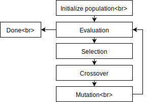
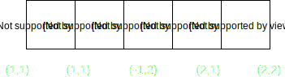

Genetic algorithms (GA) are the standard optimization methods and they operate by evolving a population of trial solutions towards better results using biological inspired genetic operators. GA belongs to a group of evolutionary algorithms which are commonly used to find an optimal solution for the most difficult computational problems which canot be computed using mathematical optimisation methods. The trial solutions are also called individuals. 
The algorithms start after generating a (random) initial population. Each of the individuals represents a possible solution to a given problem. An individual is characterized by a set of parameters (variables) known as Genes. Genes are grouped together to form a DNA which is represented as an array.  Basically, if it's possible to model a solution to your problem as an ordered sequence of alphanumeric values, GA can help you quickly find a reasonable result. As an example, consider the above showed sequence, which is used to control the movements of one car in the game. Each Gene encodes a 2D vector which determines in which direction should the car move after each step. Every implementation of a GA follows the pattern depicted on the left. After the random initialisation of population, the cars are allowed to drive in order to reach the target. After all of the cars dies, or the time bound of 1000 steps is reached, every car's DNA is evaluated with simple 'fitness' function which yields the relative "goodness" of the solution.
Mutation
Crossover
Elitism
In this example we have a population of 64 self-driving cars which are trying to find the quickest way to the white dot(target). Each of the these represents one individual in population. Each of them has it's unique DNA which consists of 1000, "moves" in various direction.
This line chart depicts the changes in fittness for each generation. Here you can see the performance difference between the best individials and the whole population.